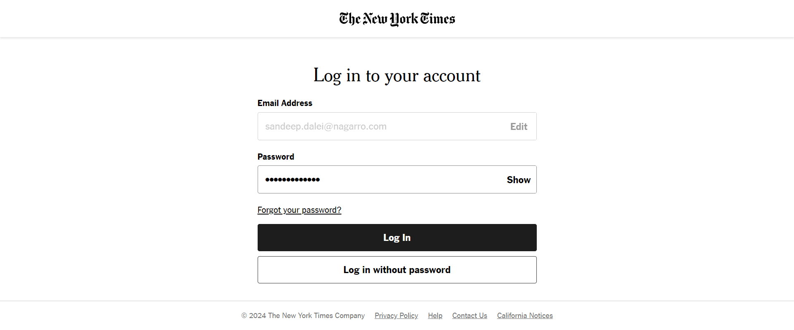

Started
Jul 30, 2024 03:03:53 PM
Ended
Jul 30, 2024 03:08:30 PM
Features Passed
0
Features Failed
1
Features
Scenarios
Steps
Timeline
System/Environment
| Name | Value |
|---|---|
| AppName | AutomationPractice |
| user | Sandeep |
| build | 1.1 |
| os | Win |
-
Verifying few critical functionalities of New York Times Web Page
3:03:54 PM / 00:04:36:103 Fail
Verifying few critical functionalities of New York Times Web Page
07.30.2024 3:03:54 PM 07.30.2024 3:08:30 PM 00:04:36:103 · #test-id=1Fail[1] Verify that User should be able to login successfullyFail[1] Verify that User should be able to login successfullyGiven User is on Home PageAnd User clicks the login buttonAnd User is on Login PageAnd User enters the email id sandeep.dalei@nagarro.comAnd User clicks the continue buttonAnd User enters the password Sandeep@32127And user clicks the login button on Login PageWhen User clicks the continue without subscription buttonThen User should verify the page title on Home Page as The New York Times - Breaking News, US News, World News and VideosStep skippedcom.hooks.Hooks.tearDown(io.cucumber.java.Scenario)fe192e27-ba21-4b50-b188-6d0a0d6ba4afPass[2] Verify the Navigation items present in the Home screenGiven User is on Home PageThen User should be able to verify the Navigation items in Home ScreenPass[3] Verify the Search action in Home PagePass[3] Verify the Search action in Home PageGiven User is on Home PageAnd User clicks on the search icon present at top left cornerAnd User enters the search item in the search box opened OlympicsThen User is on Search PageAnd User should verify the search Page Title The New York Times - SearchPass[4] Verify the U.S. Navigation Link Present in Home ScreenPass[4] Verify the U.S. Navigation Link Present in Home ScreenGiven User is on Home PageAnd User mouse hovers on the U.S. Navigation LinkThen User clicks the U.S. section news under the U.S. Navigation LinkAnd User lands on the U.S. News page U.S. News - The New York Times
-
org.openqa.selenium.TimeoutException
1 tests
org.openqa.selenium.TimeoutException
1 failedStatus Timestamp TestName Fail 15:05:02 PM When User clicks the continue without subscription button Verifying few critical functionalities of New York Times Web Page.[1] Verify that User should be able to login successfully.When User clicks the continue without subscription button